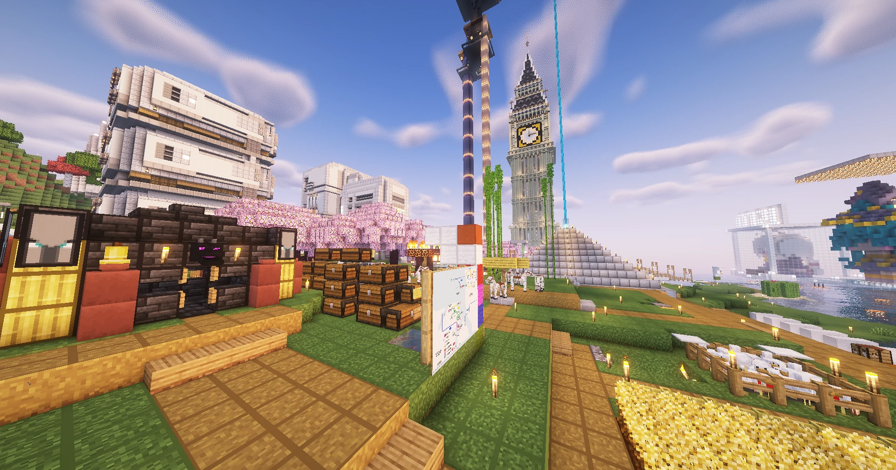
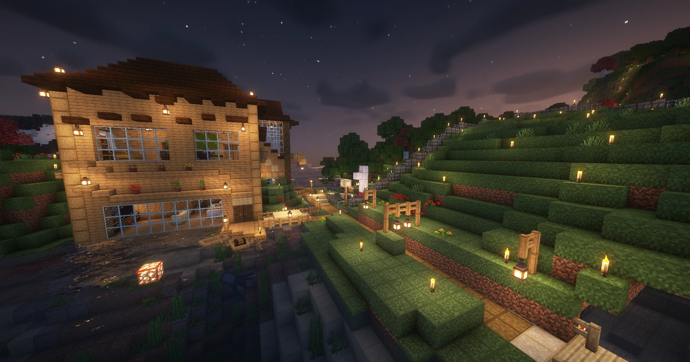
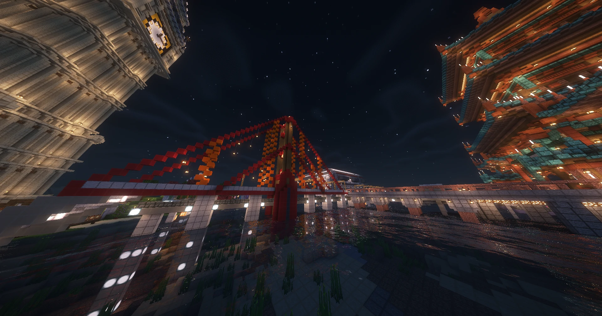
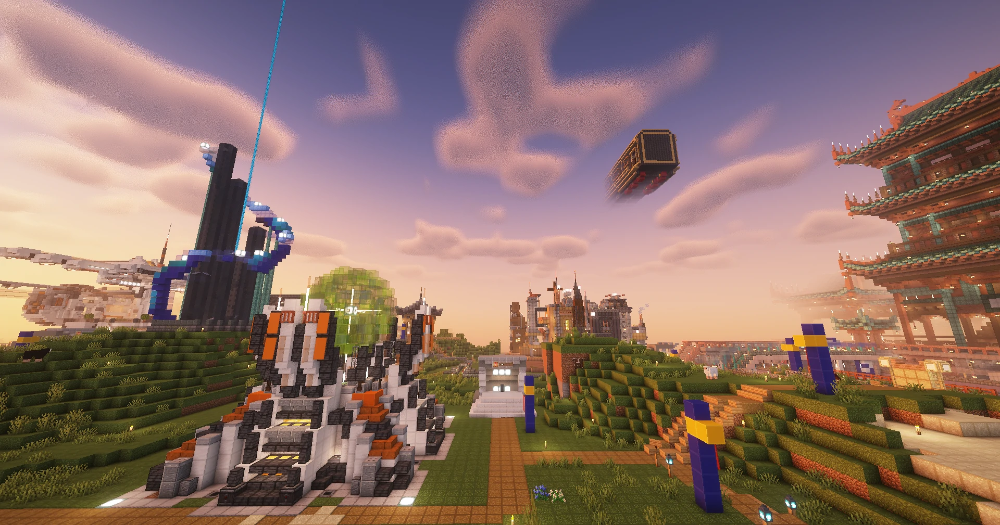
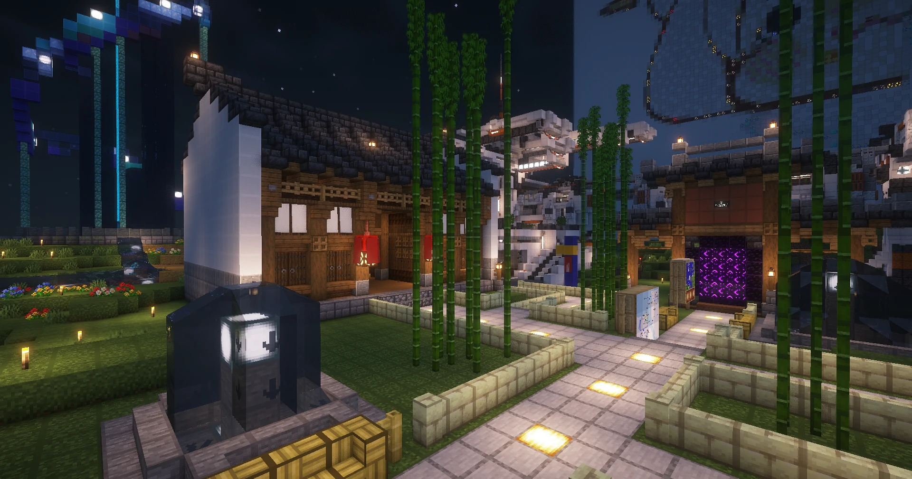
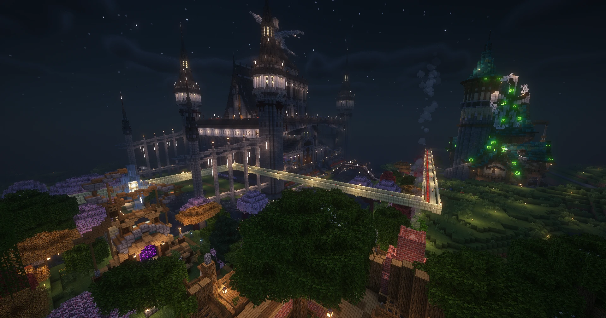
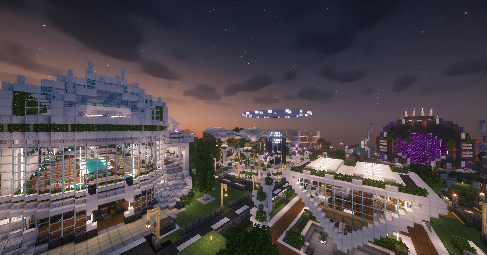
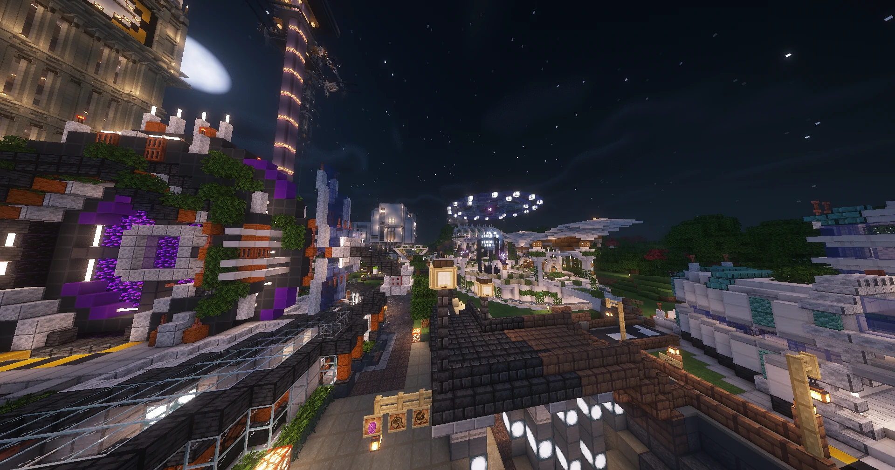
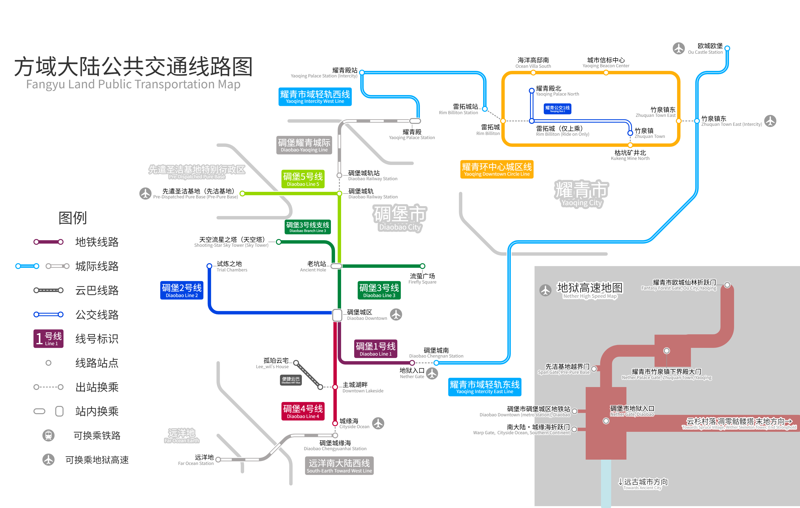

碉堡市 · 城建副设计 / 交通主设计
主力修建孤珀云宅、城缘海住宅及碉堡耀青跨海大桥。设计建造地铁1-5号线、碉堡耀青城际铁路及远洋南大陆西线铁路。
耀青市 · 城建主设计 / 交通总设计
主力修建地标耀青殿，设计竹泉镇、欧城欧堡、海洋高邸等奇观。建造环中心城区线地铁、市域轻轨及公交系统。
先遣圣洁基地 · 总设计
全额修建先遣站点、圣泉池、全境最大折跃门越界门及图书教堂。设计经过基地的碉堡市地铁5号线。
大区下辖城市
三座城市各具特色，通过发达的交通网络紧密相连
碉堡市
DIAOBAO CITY
碉堡市，因最初建造的一座小型碉堡而得名。城市地处要塞般的地理位置，西北毗邻先洁基地，东北与耀青市隔岸相望。
以碉堡为中心，逐渐向四方延伸出独具特色的建筑群：北有高耸的十层信标金字塔与伊丽莎白塔大本钟；西有银白色工业区；南有临海别墅群与铁路火车站；东临浩瀚水域，与耀青市遥相呼应。

碉堡市中心全景
以碉堡为中心向四方延伸的城市

城缘海地区住宅之一
现也为首席执行官Leeon的住宅

碉堡耀青跨城大桥
两地跨城交通命脉

耀青市全景
历史与未来交汇的滨海城市

竹泉镇镇景
竹泉镇已成为耀青市特色城镇之一

欧城欧堡一景
摄于荒木酒馆
耀青市
YAOQING CITY
耀青市，因恢宏庄严的耀青殿而得名，是一座兼具历史底蕴与现代活力的滨海城市。自最初的海边建筑群起步，城市逐步向东岸大陆拓展，形成了今日的广阔市域格局。
- ▸ 耀青殿：城市文明的起点，亦是精神象征
- ▸ 枯坑矿井遗址：曾支撑城市兴起的经济命脉，现为工业遗迹展馆
- ▸ 城市中心定位信标：明耀光柱定位市中心，四方各地皆望明
- ▸ 欧城区：因欧城欧堡的建成而崛起的新兴城区
先遣圣洁基地
PRE-PURE BASE
先遣圣洁基地，坐落于北部海岸，与碉堡市西北部接壤，是一座拥有特殊历史的直辖行政区。
城市最初因"先遣站点"而生，当地勇士们在此整装待发，踏入未知的下界开拓疆土。为了迎接凯旋的战士，城中修建了象征纯净与守护的圣泉池。开拓胜利后，建成了全境最大的下界折跃门——越界门，一跃成为全境最富饶与繁盛的地区。
随之崛起的图书教堂，融合了智慧与信仰，既是知识的殿堂，也是心灵的圣所，彰显了先遣圣洁基地独特的精神与文化底蕴。

先遣圣洁基地全景
探索与财富的象征，圣洁与荣耀的灯塔

先潔基地一景
摄于先潔基地折跃门附近
大区交通总览
Leon's Metro Transit
Leon's Rail Transit
